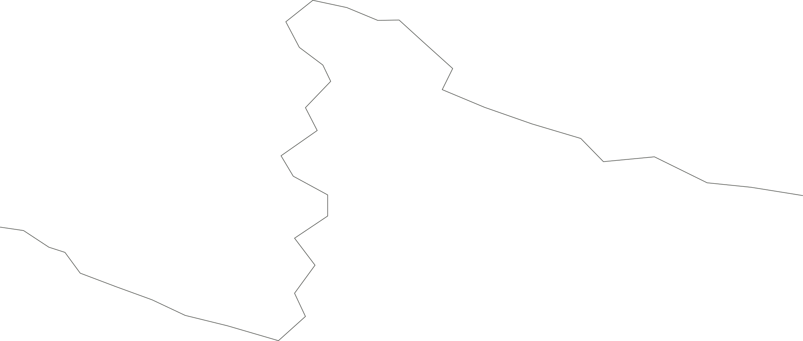
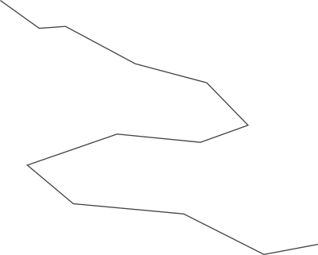
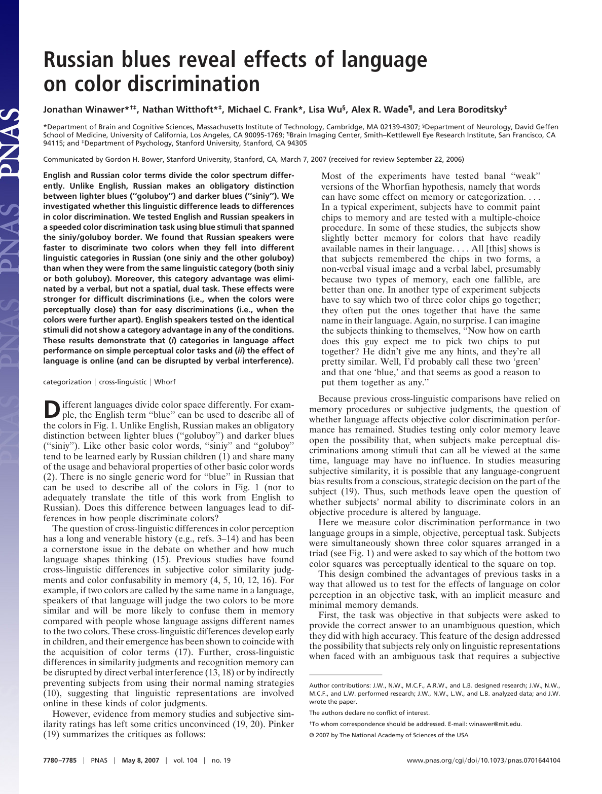
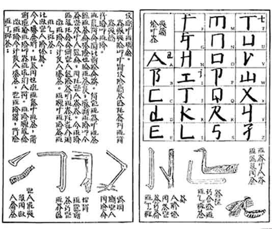
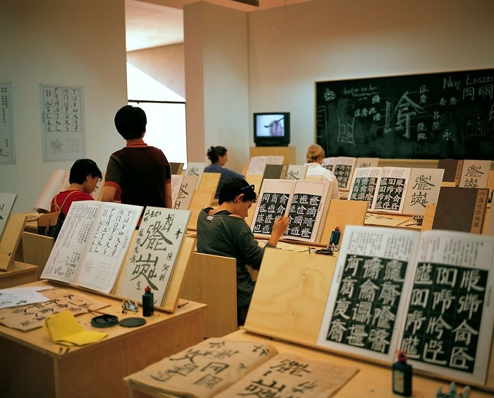
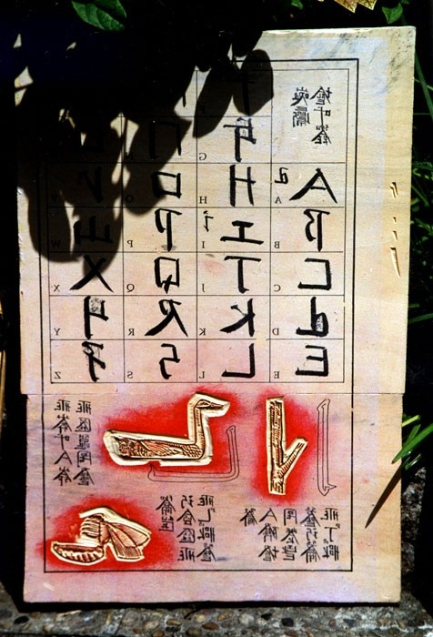
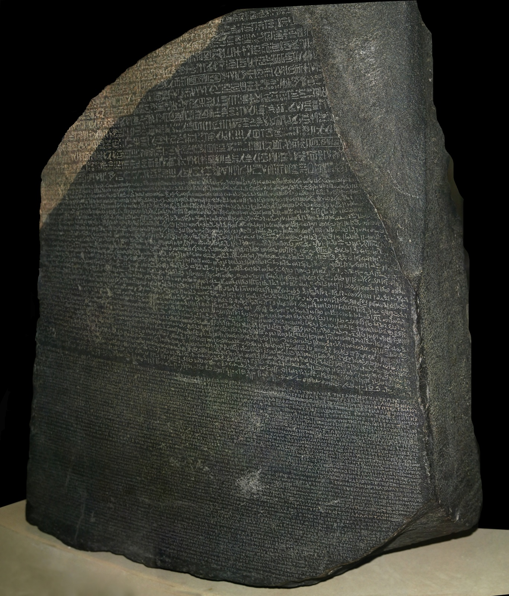

00
00
space chronicles / reading another world
01
ON LEARNING TO READ ANOTHER WORLD
How does a mark become something we can read? This atlas connects four approaches: language and attention, a colour experiment, the reorganisation of a familiar script, and parallel inscriptions.
Sapir and Whorf frame the relationship between language, culture and habitual interpretation. Linguistic relativity invites us to examine what we attend to; it does not mean that language determines thought. The Russian blues study offers task-specific evidence: a colour-category advantage disappeared under verbal interference.
Xu Bing moves from perception to practice. English letters take forms resembling Chinese characters. Textbooks, tracing exercises and a classroom make the unfamiliar arrangement learnable through a visible rule.
The Rosetta Stone offers a complementary lesson: parallel versions of a text can provide a reference for interpretation. Its role here is comparison, rather than a model for inventing an alphabet.
For Space Chronicles, these cases suggest letting planetary patterns shape distinctive letterforms while retaining a shared correspondence, so a reader on Earth can follow a traveller’s reply.
RESEARCH ATLAS
Routes connect ideas and materials.
They do not represent historical causation.


01

02

03
04

05
06

07
08
09
05

10
HIEROGLYPHIC
DEMOTIC
ANCIENT GREEK
One decree
Two languages
Three scripts
Illustrative palette
01 LANGUAGE & ATTENTION
Sapir and Whorf provide a historical frame for thinking about language and habitual interpretation. Influence is not determination.
02 RUSSIAN BLUES / 2007
Winawer et al., PNAS. A colour-category advantage disappeared under verbal interference. This is task-specific evidence. doi:10.1073/pnas.0701644104
03–06 A SCRIPT THAT CAN BE LEARNED
Xu Bing, Square Word Calligraphy, 1994–ongoing. Textbooks, tracing exercises and a classroom make the construction rule visible.
07–09 MAKING THE READING SYSTEM
Woodblock type, plate carving and stone-cut type show the material work behind the new letter arrangement. Artist documentation, xubing.com.
10 A PARALLEL REFERENCE
The Rosetta Stone, 196 BCE. A decree in three scripts helped provide clues for decipherment. British Museum; photograph: H. Hillewaert, CC BY-SA 4.0.
PROJECT INFERENCE
Observe a surface → abstract a form → preserve a correspondence. The proposed planetary script is a design exploration, not evidence of future linguistic change.
SOURCE IMAGES / XU BING STUDIO · PNAS · BRITISH MUSEUM COLLECTION